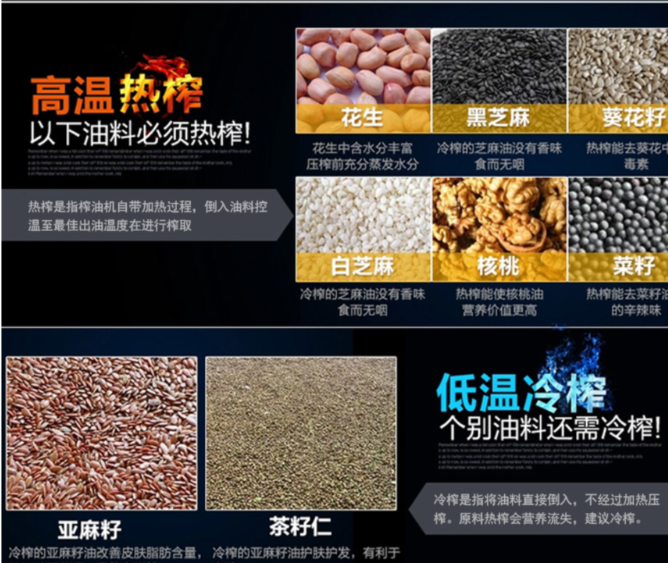
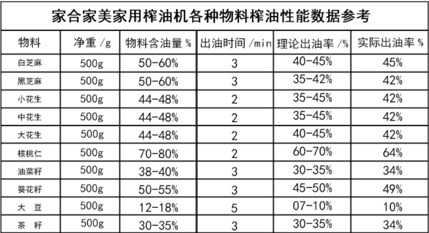

我想开一个榨油厂，应该怎么做呢？点击这里了解
贵州属于亚热带季风气候，梨子、板栗、柑橘、葡萄、枇杷皆盛产。贵州特产水果中，刺梨，猕猴桃，还有一种我们俗称的龙枣（搜了很久都找不到学名）。但是赫章核桃、修文猕猴桃、麻江蓝莓、乌当下坝樱桃、水田酥李都很受欢迎的
贵州被称为“山果之地”，主要有以下特产水果：1、 修文猕猴桃，贵州被业界专家称之为“世界上最适合猕猴桃种植的地区之一”。修文县从1998、1999年开始大面积推广猕猴桃种植。修文县冬无严寒，夏无酷暑， 境内土壤以酸性或微酸性黄壤为主，适宜猕猴桃种植。
2、 开阳富硒枇杷，开阳枇杷色泽浅黄、果皮嫩滑、口感细腻、鲜甜润喉，并具有止咳润肺的功效。“开阳富硒枇杷”是继“开阳富硒茶”之后该县获得的第二个国家级地理标志保护产品。
3、
4、 展开全部
5、 贵州特产水果：仓更板栗、贵定盘江酥李、修文猕猴桃、盘县核桃、上关六月李、荔波蜜柚、关岭火龙果、安顺金刺梨、凯里水晶葡萄、从江椪柑、晴隆脐橙、永乐艳红桃等水果